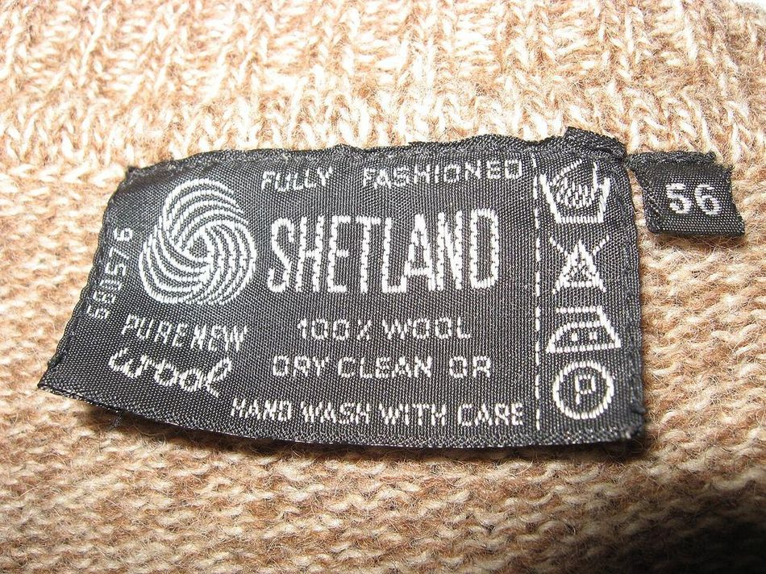
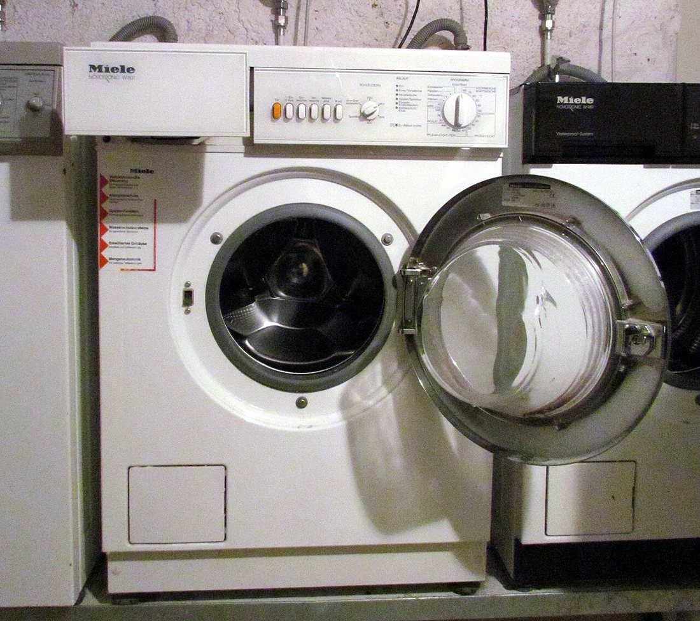
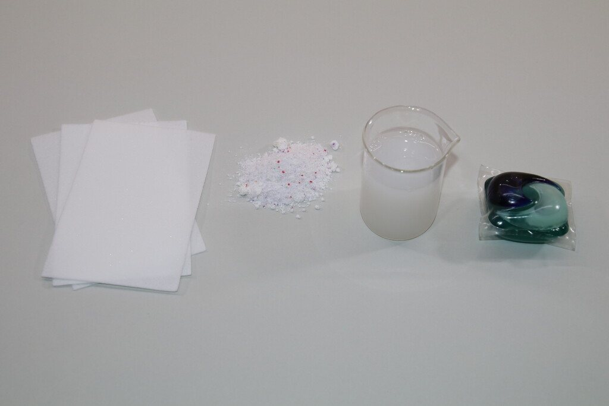
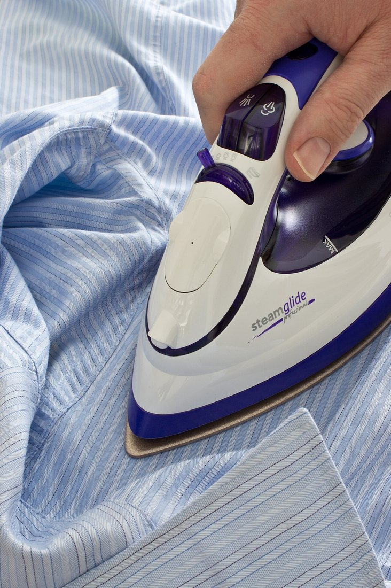
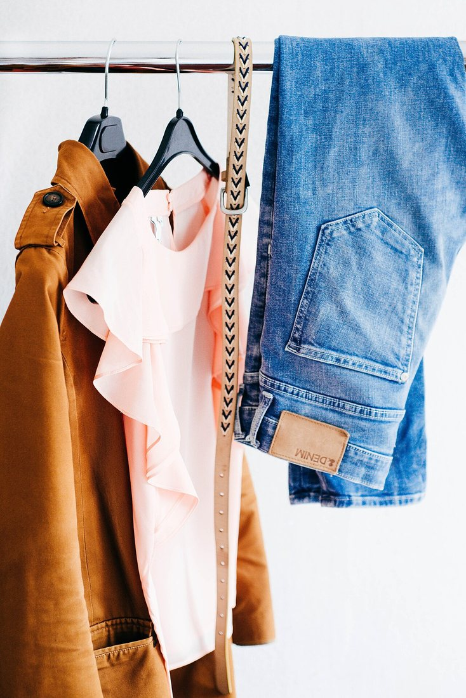
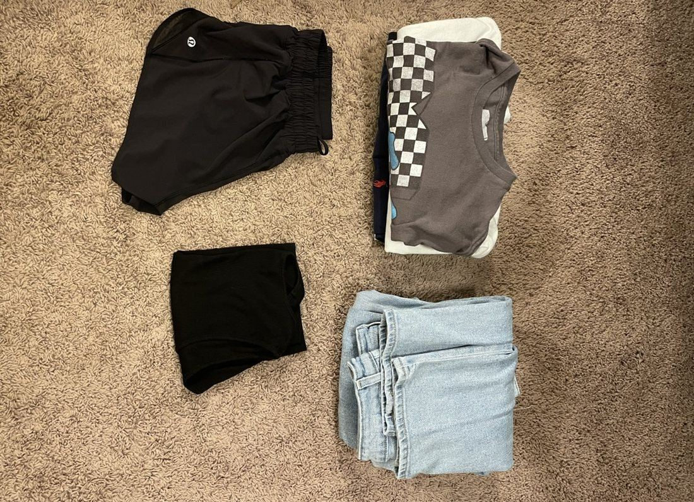
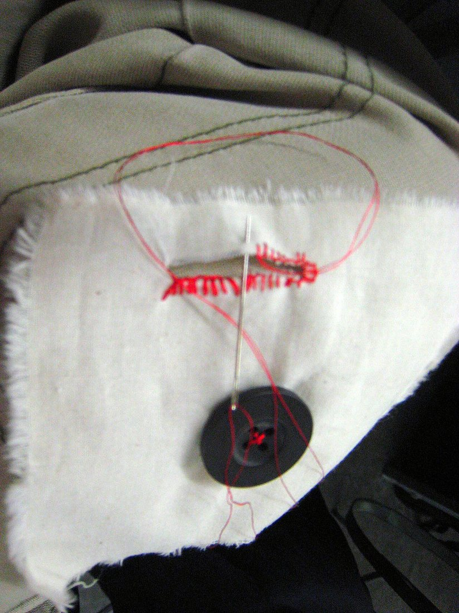
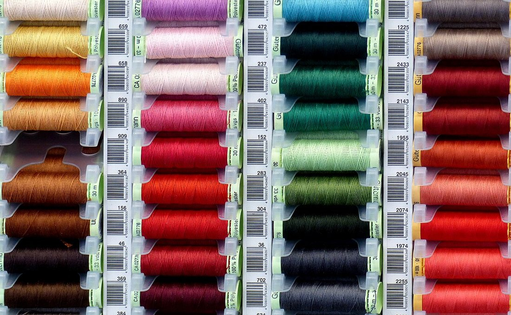

Көркем еңбек · Тұрмыс мәдениеті · Киімге күтім Art & Craft · Home Skills · Garment Care Художественный труд · Культура быта · Уход за одеждой
🧺 Киімге күтім: жуу, сақтау, ұсақ жөндеу
🧺 Garment Care: Washing, Storage & Minor Repairs
🧺 Уход за одеждой: стирка, хранение, мелкий ремонт
Дұрыс күтім киімнің көркі мен ғұмырын ұзартады. Proper care keeps clothes beautiful and makes them last. Правильный уход сохраняет вид одежды и продлевает ей жизнь.
Киімге күтім — оны таза, бүтін әрі әдемі күйде ұстау. Сапалы киім қымбат тұрады, ал дұрыс күтім оның ғұмырын бірнеше есе ұзартады әрі ақша үнемдейді. Күтімнің үш тірегі бар: жуу (киімді дұрыс тазарту), сақтау (мыжылмай, киеден қорғап ұстау) және ұсақ жөндеу (түймені қадау, жыртықты тігу). Әр киімнің ішінде күтім тәсілін көрсететін жапсырма (ярлык) болады — алдымен соны оқу керек. Garment care means keeping clothes clean, whole and good-looking. Quality clothing is expensive, and proper care makes it last far longer and saves money. Care rests on three pillars: washing (cleaning clothes correctly), storage (keeping them un-creased and protected from moths) and minor repairs (sewing on a button, mending a tear). Every garment has a label showing how to care for it — read it first. Уход за одеждой — это содержание её в чистоте, целости и опрятном виде. Качественная одежда стоит дорого, а правильный уход продлевает ей жизнь в несколько раз и экономит деньги. У ухода три опоры: стирка (правильная чистка), хранение (без заломов и защита от моли) и мелкий ремонт (пришить пуговицу, зашить порванное). На каждой вещи есть ярлык со способом ухода — его и нужно прочесть первым.
Күтім таңбалары (ярлықты оқу) Care Symbols (Reading the Label) Символы ухода (читаем ярлык)
Әр киімнің жапсырмасында 5 негізгі таңба болады. Оң жақтағы нақты ярлықты үлкейту үшін басыңыз. Every label has 5 basic symbols. Tap the real label on the right to enlarge it. На ярлыке каждой вещи 5 основных символов. Нажмите на настоящий ярлык справа, чтобы увеличить.
Жуу (ыдыс)Washing (tub)Стирка (таз)
Ішіндегі сан — ең жоғары t°. Қол — тек қолмен жуу.The number inside is the max t°. A hand means hand-wash only.Цифра внутри — макс. t°. Рука — только ручная стирка.
Ағарту (үшбұрыш)Bleaching (triangle)Отбеливание (треугольник)
Сызылған болса — ағартуға болмайды.Crossed out — do not bleach.Перечёркнут — отбеливать нельзя.
Кептіру (шаршы)Drying (square)Сушка (квадрат)
Ішінде шеңбер — кептіргіш машина. Нүктелер — t° деңгейі.Circle inside = tumble dryer; dots = heat level.Круг внутри — сушка в машине; точки — уровень t°.
Үтіктеу (үтік)Ironing (iron)Глажка (утюг)
Нүкте саны — рұқсат етілген t° (1 = төмен, 3 = жоғары).Dots show allowed t° (1 = low, 3 = high).Точки — допустимая t° (1 = низкая, 3 = высокая).
Кәсіби тазалау (шеңбер)Professional cleaning (circle)Профчистка (круг)
Химиялық тазалауды (химчистка) білдіреді. Сызылған шеңбер — химтазалауға болмайды.A circle means dry-cleaning; a crossed circle means do not dry-clean.Круг означает химчистку; перечёркнутый круг — химчистка запрещена.

«HAND WASH WITH CARE» — абайлап қолмен жуу."HAND WASH WITH CARE" — wash gently by hand.«HAND WASH WITH CARE» — бережная ручная стирка.
1. Жуу: дұрыс тазарту 1. Washing: Cleaning the Right Way 1. Стирка: правильная чистка
🔍 Үлкейту үшін суретті басыңыз. 🔍 Tap a photo to enlarge it. 🔍 Нажмите на фото, чтобы увеличить.



Нәзік маталарDelicatesДеликатные
Жүн, жібек, синтетика.Wool, silk, synthetics.Шерсть, шёлк, синтетика.
Түрлі түстіColoursЦветное
Күнделікті мақта-мата киім.Everyday cotton clothes.Повседневная х/б одежда.
Ақ зығырWhite linenБельё, белое
Төсек-орын, сүлгі.Bedding and towels.Постель и полотенца.
Түс бойынша бөлуSort by colourСортируйте
Ақ, түрлі түс, қараны бөлек жуыңыз.Wash whites, colours and darks apart.Белое, цветное и тёмное — отдельно.
2. Сақтау: киімді ұзақ сақтау 2. Storage: Keeping Clothes Well 2. Хранение: бережём вещи
🔍 Үлкейту үшін суретті басыңыз. 🔍 Tap a photo to enlarge it. 🔍 Нажмите на фото, чтобы увеличить.


Дұрыс сақтаудың 4 ережесі:4 rules of good storage:4 правила хранения:
Таза әрі құрғақ.Clean & dry.Чистое и сухое. Кір не дымқыл киімді сақтауға қоймаңыз — иіс пен зең пайда болады.Never store dirty or damp clothes — they get smelly and mouldy.Не убирайте грязные или влажные вещи — появятся запах и плесень.
Ілу не бүктеу.Hang or fold.Вешать или складывать. Костюм, көйлекті іледі; тоқыманы бүктейді (созылмас үшін).Hang suits and shirts; fold knitwear so it won't stretch.Костюмы и рубашки — на плечики; трикотаж складывают, чтобы не вытянулся.
Киеден қорғау.Protect from moths.Защита от моли. Жүн киімнің қасына лаванда не арнайы зат қойыңыз.Put lavender or special repellent near woollens.К шерсти кладите лаванду или специальное средство.
Ауа алмасуы.Let it breathe.Доступ воздуха. Шкафты тығыздамаңыз; маусымдық киімді мата қапқа салыңыз.Don't cram the wardrobe; keep seasonal clothes in cloth bags.Не набивайте шкаф; сезонные вещи — в тканевых чехлах.
3. Ұсақ жөндеу: түймені қадау 3. Minor Repairs: Sewing on a Button 3. Мелкий ремонт: пришиваем пуговицу
🔍 Үлкейту үшін суретті басыңыз. 🔍 Tap a photo to enlarge it. 🔍 Нажмите на фото, чтобы увеличить.
Жіпті дайындау.Prepare the thread.Подготовьте нитку. Матаға сай түсті жіпті инеге өткізіп, ұшын түйіңіз.Thread a needle with matching colour and knot the end.Вденьте в иглу нитку в цвет ткани и завяжите узелок.
Орынды белгілеу.Mark the spot.Наметьте место. Түйме түсетін жерден ішке қарай инені шығарыңыз.Bring the needle up from the back at the button's place.Выведите иглу с изнанки в точке пуговицы.
Тігу.Stitch.Пришейте. Тесіктер арқылы 5–6 рет инені өткізіп, түймені бекітіңіз.Pass the needle through the holes 5–6 times to fix the button.Пройдите иглой через отверстия 5–6 раз, закрепляя пуговицу.
«Аяқ» жасау.Make a shank.Сделайте «ножку». Түйме мен мата арасына жіпті орап, кішкене аяқ жасаңыз.Wind thread between button and cloth to form a small stem.Обмотайте нить между пуговицей и тканью — получится ножка.
Бекіту.Finish off.Закрепите. Ішкі жағынан 2–3 түйін жасап, артық жіпті қиыңыз.Tie 2–3 knots on the back and trim the extra thread.С изнанки сделайте 2–3 узелка и обрежьте лишнюю нить.


Мата түріне қарай күтім Care by Type of Fabric Уход в зависимости от ткани
| Ткань | Стирка | Глажка | Особенность |
|---|---|---|---|
| Хлопок | до 60°, машинная | горячий утюг (•••) | прочный, может сесть в горячей воде |
| Шерсть | 30°, ручная/деликат | тёплый утюг через ткань | боится горячей воды и трения — садится |
| Шёлк | 30°, ручная, мягко | низкий нагрев (•) | нежный, нельзя выкручивать |
| Синтетика | 30–40°, машинная | низкий нагрев (•) | быстро сохнет, боится высокой t° |
| Мата | Жуу | Үтіктеу | Ерекшелігі |
|---|---|---|---|
| Мақта | 60°-қа дейін, машинамен | ыстық үтік (•••) | берік, ыстық суда отырып қалуы мүмкін |
| Жүн | 30°, қолмен/нәзік | мата арқылы жылы үтік | ыстық су мен үйкелістен отырады |
| Жібек | 30°, қолмен, жұмсақ | төмен қызу (•) | нәзік, сығуға болмайды |
| Синтетика | 30–40°, машинамен | төмен қызу (•) | тез кебеді, жоғары t°-дан қорқады |
| Fabric | Washing | Ironing | Note |
|---|---|---|---|
| Cotton | up to 60°, machine | hot iron (•••) | strong; may shrink in hot water |
| Wool | 30°, hand / delicate | warm iron through a cloth | shrinks with hot water and friction |
| Silk | 30°, hand, gentle | low heat (•) | delicate; never wring it out |
| Synthetics | 30–40°, machine | low heat (•) | dries fast; afraid of high t° |
Пайдалы кеңестер Useful Tips Полезные советы
🏷️ Алдымен ярлықRead the labelСначала ярлык
Жумас бұрын күтім жапсырмасын міндетті түрде оқыңыз.Always read the care label before washing.Перед стиркой обязательно читайте ярлык ухода.
🌀 Аударып салыңызTurn inside outВыворачивайте
Түсті және баспасы бар киімді теріс айналдырып жуыңыз.Wash coloured and printed items inside out.Цветное и с принтом стирайте наизнанку.
⚡ Дағды бірденTreat stains fastПятно — сразу
Дақты неғұрлым тез кетірсе, соғұрлым оңай шығады.The sooner you treat a stain, the easier it comes out.Чем быстрее убрать пятно, тем легче оно отстирается.
🧵 Жөндеу жинағыA repair kitНабор для ремонта
Ине, жіп, түйме — үйде әрқашан болсын.Keep a needle, thread and spare buttons at home.Держите дома иглу, нитки и запасные пуговицы.
💬 Қорытынды 💬 In a nutshell 💬 Главное
Киімге күтім — үш қарапайым әдеттен тұрады: ярлықты оқып дұрыс жуу, таза әрі құрғақ күйде сақтау, ұсақ ақауды дер кезінде жөндеу. Осы дағдыларды меңгерген адам киімін ұзақ жаңа күйде ұстайды, ақша мен ресурс үнемдейді әрі ұқыптылыққа баулиды. Garment care comes down to three simple habits: wash correctly by reading the label, store clothes clean and dry, and repair small faults in time. Master these skills and your clothes stay new for longer — saving money and resources and teaching you to be tidy. Уход за одеждой сводится к трём простым привычкам: правильно стирать, читая ярлык; хранить вещи чистыми и сухими; вовремя устранять мелкие дефекты. Освоив эти навыки, вы дольше сохраните одежду новой, сэкономите деньги и ресурсы и приучитесь к аккуратности.